Leitmotif Workshop
Table of Contents
Overview
Aim
To explore the creative use of music technology to create leitmotifs in sound and music.
Objectives
- Explore software for processing sound.
- Explore a Digital Audio Workstation (DAW) for creating music.
- Use MIDI keyboard controllers for controlling sound processors and DAWs.
- Play with sound and music to create leitmotifs.
Summary of tasks
| Task | Objective |
|---|---|
| 1 | Listening to leitmotif |
| 2 | Create an example of leitmotif |
| 3 | Create a new sound using two existing sounds |
| 4 | Edit the recorded MIDI |
| 5 | Add another Crystal track |
| 6 | Add an effect |
| 7 | Change the effect's settings |
| 8 | Create an effects chain |
What is a Leitmotif?
A leitmotif in music is a short, recurrent theme throughout a piece of music. It can be a melody or phrase, a chord sequence, a rythmn, or a combination of these. It is used to associate with, or to refer to, a particular character, idea, place or situation (we will call these ‘the thing’).
Task 1: Listening to leitmotif
Listen to The Imperial War March from Star Wars and ask yourself a few questions about it:
- What is ‘the thing’ it is associated with?
- What does it make you think of?
Star Wars Imperial War March
So to summarise, the leitmotif is the dominant theme that occurs when the ‘thing’ appears and provides continuity in the music and consequently, the film.
The word is from the German language. The words leit and motif, which translate respectively as "leading" and "motive."
It is an arrow trained on a bull’s eye in music and sound it points towards a component of the overall soundtrack, drawing the listener’s attention to it.
Leitmotifs in film music
The term is also applied in other kinds of music. It appears a lot in Film Music and Games Soundtracks. Maybe you have not really thought about leitmotifs and ‘why’ they are used and what role they have.
Have a listen to some audio examples whilst considering the following:
- The instrumentation that is used.
- The range of notes that are used in regards to pitch and voicing.
- Pace: how fast or slow do events happen in the music? Does this change over time?
- Rhythm: are there any rhythmic patterns that signify anything?
Here some examples of character leitmotifs in films:
Star Wars AGAIN (1977)
Have a listen to the Joker Theme created from two tones initially on violins using razor blades and then a a variety of instruments.
Joker theme
- The Dark Knight (2008)
- Hans Zimmer uses sounds or tones he has created, rather than recognizable musical instruments.
- 2001: A Space Odessey (1968)
- Stanley Krubrick. It appears with every appearance of The monolith from Kyrie Gyorgy Legeti’s Requiem. If you want to listen to some more examples click here for an area on YouTube.
Unsettling, unable to fully understand it, this is unsettling to the listener, this then strikes fear into you when you hear it, whether it, the monolith, is in frame or not. It influences your thinking.
- Lord of the Rings (2001+)
- An area of LOTR leitmotifs can be found here. This is the magic of what music can do: it can convey emotion, feeling and meaning. It can shape or influence your thinking. Through connotation, denotation….signifies emotions. Now let’s move to Games character motifs.
Leitmotif in Games
- Final Fantasy VII
- A strong example of the use of leitmotifs in Games is to be found in Final Fantasy VII. Every major story element to the game receives a recoginzable theme. Listen to them here on YouTube.
- Assassin's Creed II
- Another example could be Assasins Creed II
Assassins Creed II
Task 2: Create an example of leitmotif
Try creating a leitmotif in sound for a character or place or situation. In order to do this you can make use of Crystal (discussed in the next section). Here are some animation characters that you can try creating a leitmotif for.
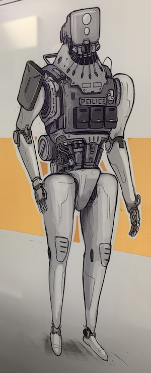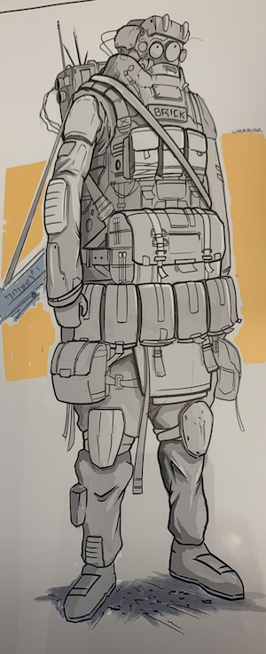 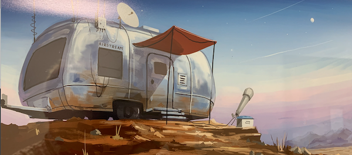 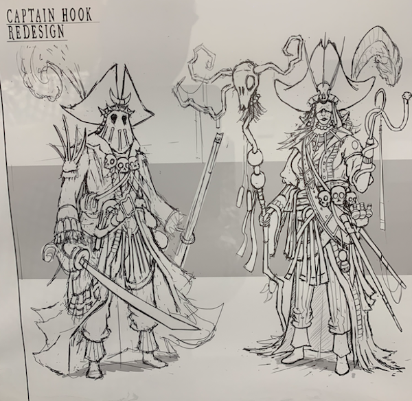 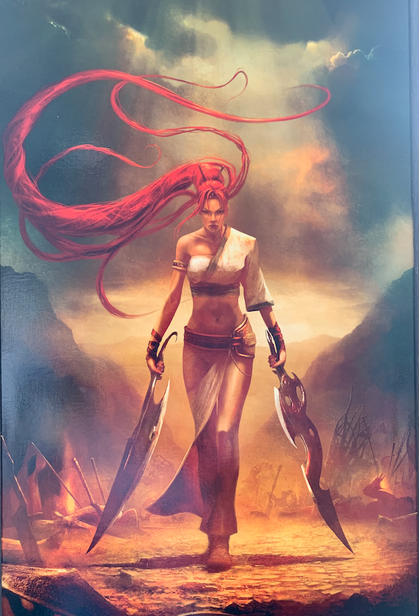 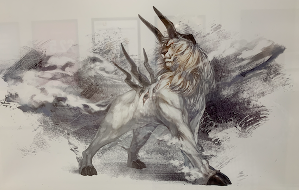
Images: Tom Leitch | Josh Atkinson | Yuala Chen
- Consider the main theme of the character.
- What do you see the size of the character as? Metaphorically and physically large, small
- What is their message to the listener?
- What do you imagine their attributes as?
- Evil, dangerous, good, truthful, courageous, timid, loving, endearing
Crystal and GarageBand setup
The Crystal synthesiser runs as a plug-in inside GarageBand. Follow the instructions in this section to set up GarageBand and Crystal.
Crystal is a free synthesiser that works with music applications in MacOS and Windows. See the section on Getting the software for more information.
Running GarageBand
- Run GarageBand by clicking on the GarageBand icon 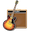 in the
Dock Bar at the bottom of the screen. If the icon is not there then do
the following:
- Click on an unoccupied area of the Desktop.
- Select
Go > Applicationsfrom the menu at the top of the screen. - Scroll down to GarageBand in the list and double click on it.
- At the Welcome to GarageBand screen click Continue
- At the What's New in GarageBand screen click Get Started
From the Choose a Project dialogue (Figure 1) select Empty Project and click Choose
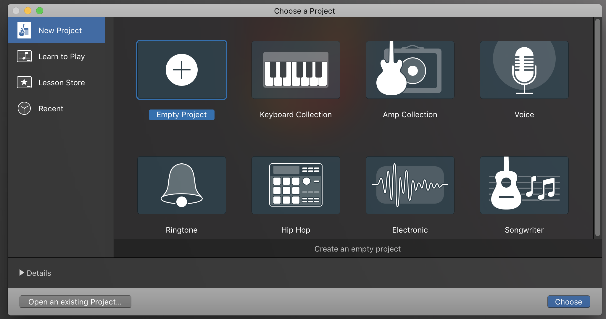
Figure 1: GarageBand 'Choose a Project' dialogue
From the Choose a track type dialogue (Figure 2) select Software Instrument and click Create
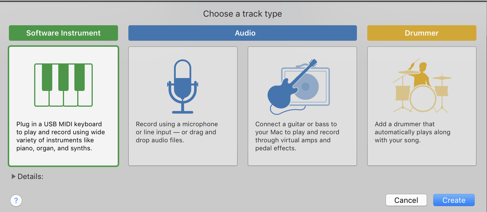
Figure 2: GarageBand 'Choose a track type' dialogue
At this point the main GarageBand screen should appear, looking something like Figure 3
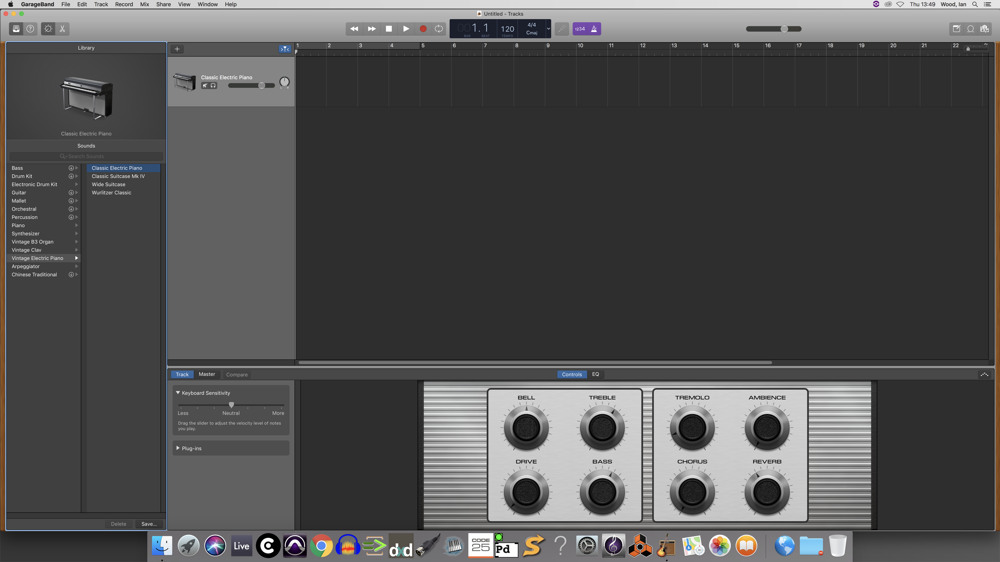
Figure 3: GarageBand main screen
Setting up audio and MIDI
From the menu at the top of the screen select
GarageBand > Preferences…(Figure 4) then selectAudio/MIDI(shown by ①)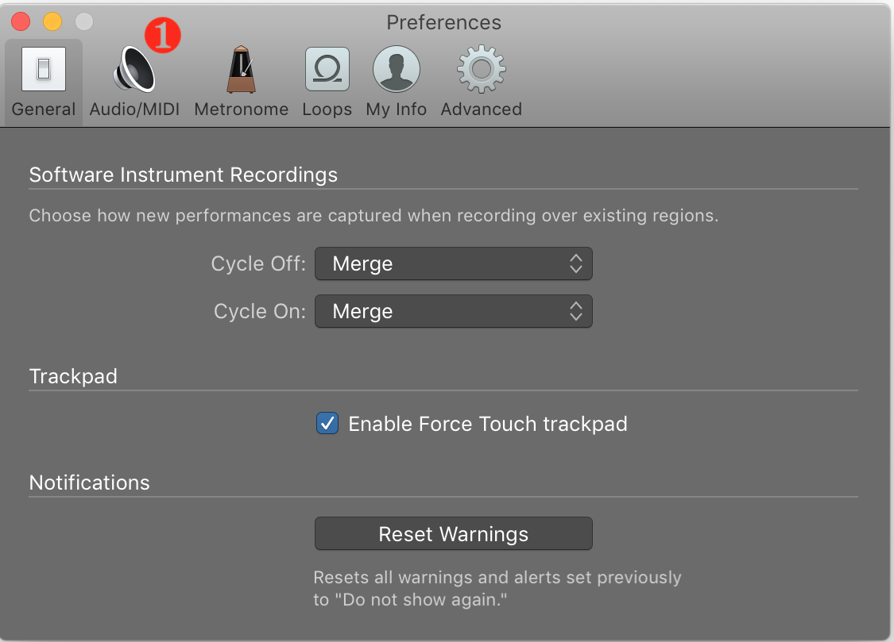
Figure 4: GarageBand preferences dialogue
- Set the Audio/MIDI dialogue so that it looks lke Figure
5 by setting:
- Output device to Built-in Output ①
- Input device to Built-in Microphone ② (it does not matter whether it is allowed to access the microphone as we will not be using it)
Note: The MIDI status information should show at least 1 MIDI inputs have been detected
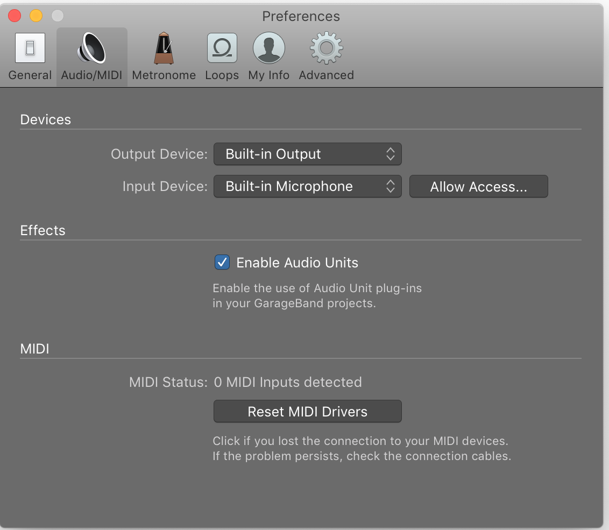
Figure 5: GarageBand Audio/MIDI dialogue
- Close the Preferences dialogue box by clicking on the red traffic light button at the top-left of the window.
Setting up the volume
Plugging in headphones/earbuds
Setting up the MIDI keyboard
There is an M-Audio music keyboard attached via USB cable to the iMac. It will either be a Code 25 or Axiom 25.
- Check that the music keyboard is plugged in (power comes from the USB cable).
- If the keyboard is not switched on (it should be showing light from its display) then switch it on. Both types of keyboard have a switch at the back on the left.
- Check that the octave is not too high or low by pressing one of the octave keys (located on the left). It should read somewhere around 4 – if it is too high then decrease it; if too low then increase it.
- See if it works: pressing a key on the music keyboard should produce a sound. If you do not have sound then ask a tutor.
Setting up Crystal
Set up GarageBand's Smart Controls (located at the top left of the GarageBand window) so that they are the same as Figure 6
Figure 6: GarageBand Smart Controls
- In the Track/Master/Compare area (Figure 7) make sure that Track is selected and click on the ► Plug-ins text to display its options, as shown in Figure 8
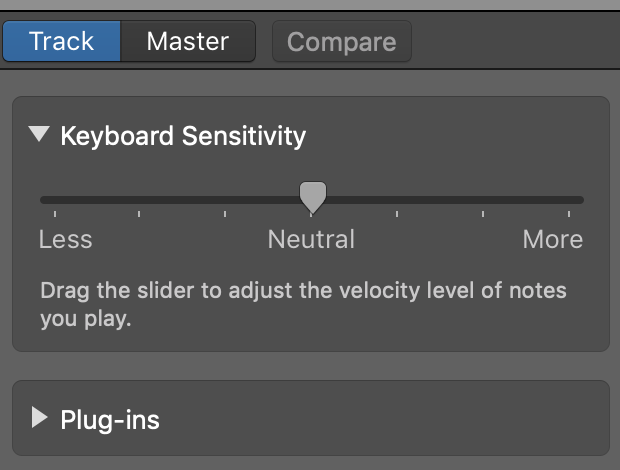
Figure 7: GarageBand track/master/compare area
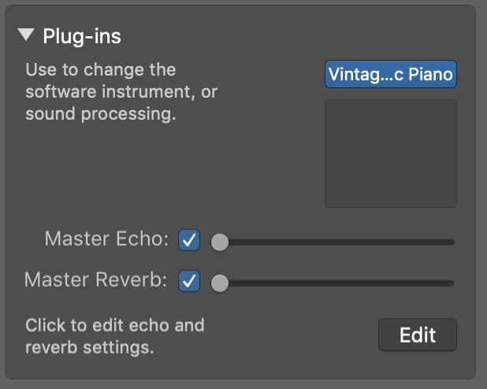
Figure 8: GarageBand plug-ins
- Move the cursor over the current plug-in (shown by ) and click on the to display a menu of possible plug-ins.
- From the list select
Crystal > Stereo(or if it is not visible then selectAU Instruments > Green Oak Software > Crystal > Stereoinstead). - The Crystal plug-in should now appear (Figure 9)
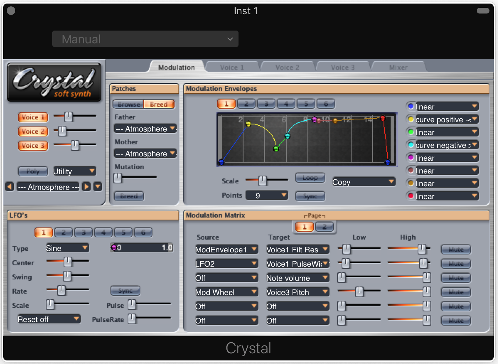
Figure 9: Crystal plug-in
Congratulations – you made it through the setup
Using Crystal
Diving straight in
If you want to hear something after all that effort of setting up, then try the following steps:
- Press a key on the music keyboard and hold it down a loooooonnnnnnnnggggg time to hear how the sound develops.
- Try a different note and do the same holding down. Other than a change in pitch (which you would expect as it is a different note) does it sound different? If yes, why might that be do you think?
- On the music keyboard try changing the octave (the controls on the left) by one up or down and see how that changes the sounds produced.
- Click the ► in 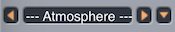 to try the next preset, or click ▼ to open the full list of presets to select from – pick something that takes your interest. How does it sound?
- Think back to the sections on leitmotif. Does anything you have heard give you any inspiration for the character you want to put a sound to?
Terminology
Some terminology used when describing the features of Crystal. Feel free to skip this section and refer back to it later as necessary.
| Term | Meaning |
|---|---|
| Bank | A collection of patches organised in groups |
| Breed | To combine two sounds to produce a third |
| Frequency | The rate per second of a vibration constituting a wave |
| Group | A collection of patches that forms part of a bank |
| Mutation | The amount (degree) of change applied to a sound |
| Oscillator | A device to generate a vibrating signal e.g. a sine wave |
| Patch | The settings to create a particular sound or the sound itself |
| Pitch | The degree of highness or lowness of a tone |
| Voice | A sound generator (Crystal has 3 of these) |
A number of terms used in the workshop have a definition associated with them – just move the cursor over an underlined word and it will show its definition
YouTube Synthesizer video
Key features
The Crystal synthesiser plug-in looks complex but can be viewed as a collection of different areas, each area contributing something different to the sound produced. The areas are described in the sections below (numbers correspond to those in Figure 9).
1. Main controls
- Voices
- Crystal produces sound using three sound generators and the controls for how much each contributes to the overall sound are here. Think of them as three singers, each producing a different sound, that when mixed together in different proportions produces something interesting.
- Patch/group
- Indicates the most recently loaded sound patch or patch group. Figure 9 has the group Atmosphere selected. Use ◀ and ► to move to previous/next patch; use ▼ to list all patches in the current bank.
2. Patches
- Browse
- Choose a bank of sounds – currently there is only one bank of sounds installed so this function is of little use.
- Breed
- Set the father and mother patches, together with an amount of mutation then click Breed to produce a new sound that is a combination of the two original sounds and a degree of mutation.
3. Modulation envelopes
An envelope is a series of points that determine the amount by which the feature it is modulating changes. Given the modulation envelope in Figure 11 the quantity of modulation starts at nothing (blue dor) increases to near maximum (yellow dot), falls to around 1/3 (green dot) and so on. What the envelope controls is deermined by the modulation matrix.
(See: YouTube video)
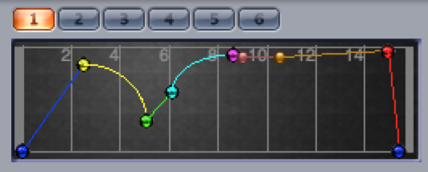
Figure 11: Crystal modulation envelope example
4. LFOs
Low frequency oscillators (LFOs) are used to impart a sense of movement to the sound. The most common is a sine wave that rises and falls in a smooth fashion. This regular motion can be used to modulate the pitch or volume level of a sound, making it wobble with a tremolo or vibrato effect (for pitch) or pulse louder and quieter (for volume). The faster the LFO runs at (the greater its frequency) the quicker the pitch wobble or volume pulsing.
(See: YouTube video)
5. Modulation matrix
The modulation matrix determines which control (source) modulates which synthesizer feature (target). In the default setup (Figure 12) ModEnvelope1 is shown to affect Voice 1 Filt Res i.e. the resonance property of Voice 1's filter.
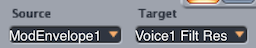
Figure 12: Crystal modulation matrix first item
Experimenting with Crystal
Task 3: Create a new sound using two existing sounds
Use the breed facility to create a new sound from two other sounds.
Breeding new sounds
For the following steps be sure to keep a note of Father, Mother and Mutation settings that produce something interesting as these can be used in future.
- In Crystal's Patches section (see Figure 13) pick two different patches from the patches list: one each for Father and Mother. Leave the Mutation setting as it is. Click Breed and listen to the results.
- Adjust the Mutation setting, click Breed, and listen to the results. What is the difference? What about other Mutation settings?
- Reset the Mutation to no mutation and try different Father and Mother combinations.
Saving a patch
Having worked to create a new sound it is useful to be able to save the results. This can then be used in anyone else's copy of Crystal to recreate the same sound.
- Click the pull-down ① (Figure 14). It normally shows Manual.
- Select
Save As...② from the menu - Supply a name for the patch (setting) in the
Save As:textbox. - Click the
Crystalpulldown forWhere:(Figure 15) - Click
Desktopin theFavoritesarea. - Click Save to save the patch to the Desktop.
- Check that it has saved there by looking at the right of the desktop.
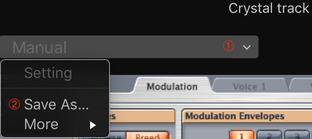
Figure 14: Crystal save pulldown
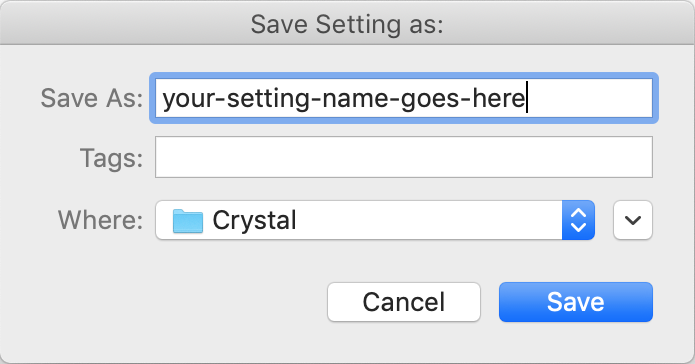
Figure 15: Crystal save-as pulldown
Email the setting to yourself so that you can use it at home/college.
Open a browser (Safari and Chrome are available on the dock bar) then navigate
to your webmail account e.g. gmail.com and send the setting file as an
attachment.
Recording a Crystal track
Having created an interesting patch it would be useful to record the results of playing something with it. GarageBand can record the audio resulting from playing notes using Crystal.
Keyboard shortcuts
| Shortcut | Description |
|---|---|
K |
Toggle metronome on/off |
⇧+K |
Toggle count in on/off |
R |
Toggle record start/stop |
SPACE |
Toggle play/pause (►) |
ENTER |
Rewind to the start of the track |
To do this, follow these steps:
- Practice what you want to play before you do any recording.
- Turn the metronome and count-in features off , unless you want GarageBand to make a ticking sound evey beat.
- Click the red record button shown in Figure 16 (or press R) to start recording. The transport bar will then turn into that shown in Figure 17.
- Hold down some keys on the M-Audio keyboard for the notes you want to record.
- Click the red record button (or press R) to stop the recording (Figure 17).
- Click the green play button (or press SPACE) to stop the play bar.
The result should look something like Figure 18.
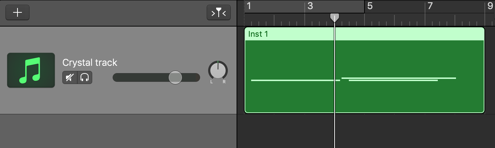
Figure 18: Crystal recorded track
To change the title of the track from Inst1 to Crystal track (or anything else you want) double cick on the Inst1 text in the grey half of the track and type in your own text.
Playing a Crystal track
- Click on the play bar and drag it to a position before the part of the track you want to play.
- Click on the play button (►) or press SPACE to start playing.
- Click on the play button (►) or press SPACE again to stop playing.
Task 4: Edit the recorded MIDI
Edit the recorded MIDI data so that it conforms better to what you require for your character's leitmotif.
Editing a Crystal track
- Double click anywhere on the green area of the track shown in Figure 18. This will open the Piano Roll area (see Figure 19).
- Notes in the track area (upper half of Figure 19) can be edited in the piano roll area (lower hald of the Figure). ① and ② show two notes and their piano roll equivalents; ③ shows the pitch of notes (C3 is the third C note on the piano keyboard).
The piano keyboard shown with C3 in Figure 19 can be used to play
notes using Crystal by clicking on the appropriate note.
The Crystal track can be muted/unmuted using ④
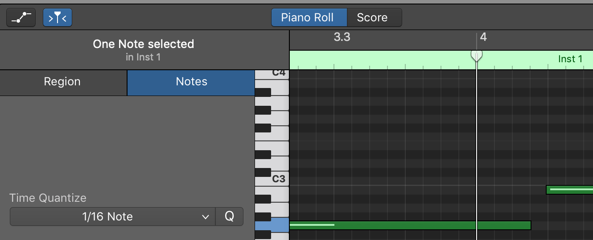
Figure 19: Piano roll area
| Shortcut | Description |
|---|---|
⌘+C |
Copy the selected note to the clipboard |
⌘+V |
Paste the note from the clipboard into the piano roll |
⌘+X |
Cut the selected note to the clipboard |
⌘+Z |
Undo the last action |
Changing the pitch/start point of a note
Click on the note's green bar in the piano roll area and drag it up/down to change the pitch or left/right to change the start point of the note.
Changing the duration of a note
- Move the cursor over the right hand end of the note's green bar and the cursor will change to a ']'
- Click and drag the right hand end of the bar to left/right to shorten/lengthen the note.
Copying a note
- Click on the note's green bar in the piano roll area to select it.
- Select
Edit > Copy(or use the⌘+Cshortcut). - Select
Edit > Paste(or use the⌘+Vshortcut). A copy of the note's green bar will be available in the piano roll to reposition at the desired position.
Deleting a note
- Click on the note's green bar in the piano roll area to select it.
- Press the backspace key ←
Undoing an edit
- Select
Edit > Undo(or use the⌘+Zshortcut).
Task 5: Add another Crystal track
Follow the instructions below to add another Crystal track
Adding another Crystal track
When creating a soundtrack it is very unusual just to have a single track – such projects often have tens of tracks, each contributing a layer of sound to the overall result. To add another track use the following steps:
- Select
Track > New Track(or use the shortcut⌥⌘+N) - From the Choose a track type dialogue (shown much earlier in Figure 2) select Software Instrument and click Create
- Follow the instructions for Setting up Crystal described previously.
Remember from a previous tip that tracks can be muted so that they do not make a sound. Click the mute button located just below the track's name to mute/unmute the track
Experimenting with effects
An effect is a feature of GarageBand that can be applied to a track in order to affect its sound in some way. Different effects change the sound in different ways. Table 5 shows some of the available effects (there are lots more in GarageBand), how each affects the sound, the effect's location in GarageBand's menu (see Adding effects for more information), and some additional reading about the effect elsewhere on the internet.
An effects chain is a series of effects where the output from one effect acts as the input to the next effect in the chain to see if they get you closer to the results you are looking for, or if they inspire you with unexpected results.
| Effect | How it affects the sound | Menu |
|---|---|---|
| Bitcrusher | Sound like an early game soundtrack | Distortion |
| Channel EQ | Boost/reduce particular frequencies | EQ |
| Chorus | Thicken the sound with added harmonies | Modulation |
| Compressor | Quiet sounds louder, loud sounds quieter | Dynamics |
| Distortion | Gritty/fuzzy/grungy/… | Distortion |
| Echo | Delayed distinct copies of the sound | Delay |
| Filterbank | Range of filters that remove frequencies | Filter |
| Flanger | A resonance effect (often a guitar pedal) | Modulation |
| Overdrive | Increase volume (often a guitar pedal) | Distortion |
| Ring shifer | Sounds of Dr Who Daleks and Cybermen | Modulation |
Task 6: Add an effect
Add an effect from the list in Table 5 or one of your choosing from those available in GarageBand.
Adding an effect
- Select the Smart Controls for the Crystal track – they should look like this:
- In the plug-ins area (shown in Figure 20) move the mouse cursor over ① and click on the area next to the up/down arrow.
- Select an effect from the menu (shown in Figure 21) and it will be applied to the track.
- Test the results by either playing a note on the M-Audio keyboard or by pressing play (►) to hear the previously recorded track.
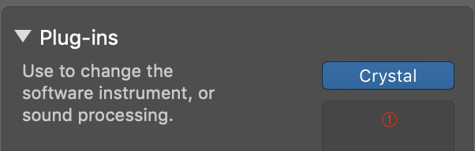
Figure 20: Plug-ins chain area
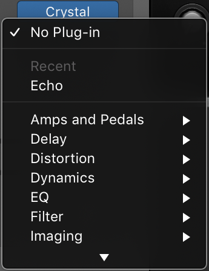
Figure 21: Plug-ins effects menu
Task 7: Change the effect's settings
Fine tune the effect so that it has results closer to what your require.
Changing an effect's settings
- Click on the effect's name in the effect chain to bring it's dialogue box up. The example in Figure 22 shows the box for the echo effect. Each effect will have its own particular dialogue box.
- Click on the setting pulldown (shown as Factory Default in Figure 22).
- Pick a setting from the list and listen to the result. Remember you will have to play a note on the M-Audio keyboard or press play (►) to hear what the effect does.
- Experiment with the sliders/other controls on the effect to see what different aspects of the sound can be omdified.
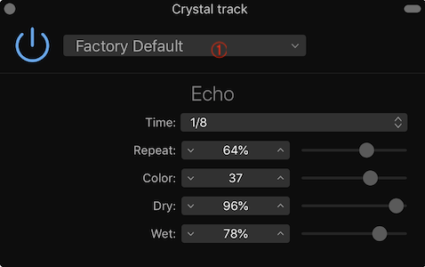
Figure 22: GarageBand echo effect dialogue
Task 8: Create an effects chain
Add an effects chain to your Crystal track and experiment with different effects in the chain. Some of the effects available in GarageBand are shown in Table 5.
Constructing the effects chain
- Add another effect in the area where the first effect is but after it so that it forms a chain of two effects.
To think about
- Does the order of the effects in the chain affect the sound produced?
- How might an effects chain be saved for future use?
Getting the software
| Software | Availability |
|---|---|
| Crystal | Free from Green Oak site |
| GarageBand | Comes free with MacOS on various Apple machines |
| Also available free on iPad range of tablets |
Some additional reading on effects
- Future Music 2012
- Distortion, saturation and bitcrushing explained
References
| [1] | n/d. Synthesizer boot camp 1 -- Modulation: putting the pieces together. https://youtu.be/MzN89Rc_06M, May 2009. First in a series of videos on aspects of synthesizers. [ bib ] |
| [2] | n/d. Synthesizer boot camp 4 -- Low frequency oscillators. https://youtu.be/CS_MFw2Y9kU, October 2009. Fourth in a series of videos on aspects of synthesizers. [ bib ] |
| [3] | n/d. Distortion, saturation and bitcrushing explained. https://www.musicradar.com/tuition/tech/distortion-saturation-and-bitcrushing-explained-549516, June 2012. Information on different types of distortion effects. [ bib ] |
| [4] | Mark Richards. What is a leitmotif and how does it work in films. https://www.filmmusicnotes.com/what-is-a-leitmotif-and-how-does-it-work-in-films/, December 2012. Useful examples of leitmotif. [ bib ] |